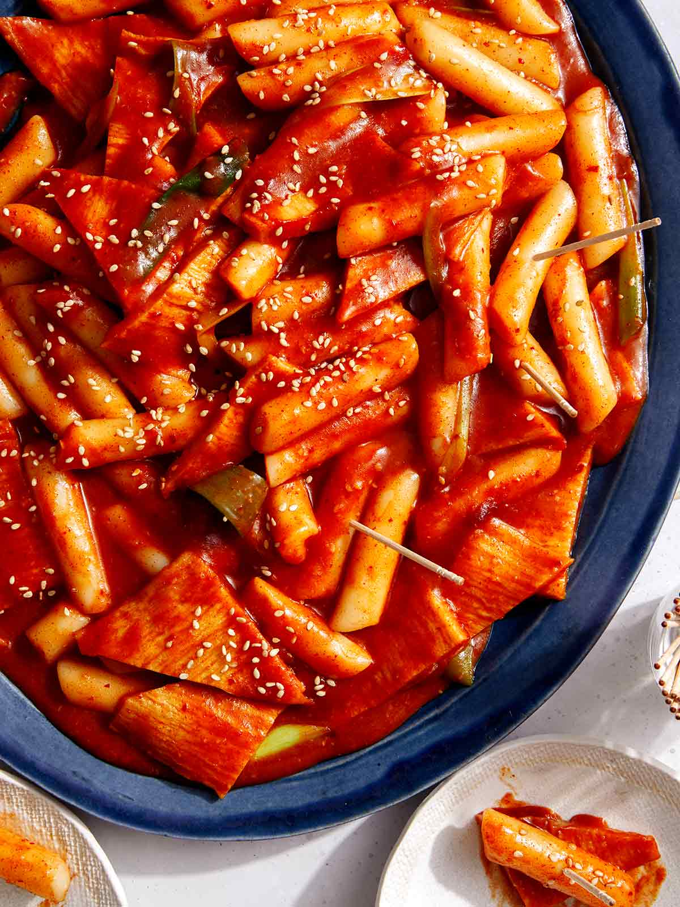

Odin's Tteokbokki

Tteokbokki, also known as simmered rice cake, is a very popular Korean food made using tteok, which are Korean rice cakes. These rice cakes are typically cooked in a soupy or thick spicy sauce made with Korean chilies and soy sauce. Tteokbokki is typically paired with other toppings such as fish cakes, boiled eggs, or noodles.
Ingredients
Main
- 350g Korean rice cakes, separated
- 150g Korean fish cakes, rinsed over hot water & cut into smaller pieces
- 2 cups Korean soup stock
- 60g onion, thinly sliced
Tteokbokki Sauce
- 3 Tbsp gochujang, aka Korean chili paste
- 1 1/2 Tbsp raw sugar
- 1 Tbsp soy sauce
- 1 tsp minced garlic
- 1 tsp gochugaru, aka Korean chili flakes
Garnishes/Optional Toppings
- 1 tsp roasted sesame seeds
- 1 tsp sesame oil
- 1 stalk green onion, finely chopped
- Some eggs to boil
- Instant noodle packet for the noodles only
- 1 head of cabbage
Steps
- Soak your rick cakes in warm water for 10 mins if still frozen or chilled.
- Boil the soup stock in a pot over medium high heat, then add in the tteokbokki sauce, fish cake, and onion. You may also add any optional ingredients.
- Continue boiling for 3 to 5 mins until the rice cakes are fully cooked.
- Simmer over a low heat for a further 2 to 4 mins to thicken the sauce.
- Add sesame oil, sesame seeds, and green onions, then stir and serve warm.